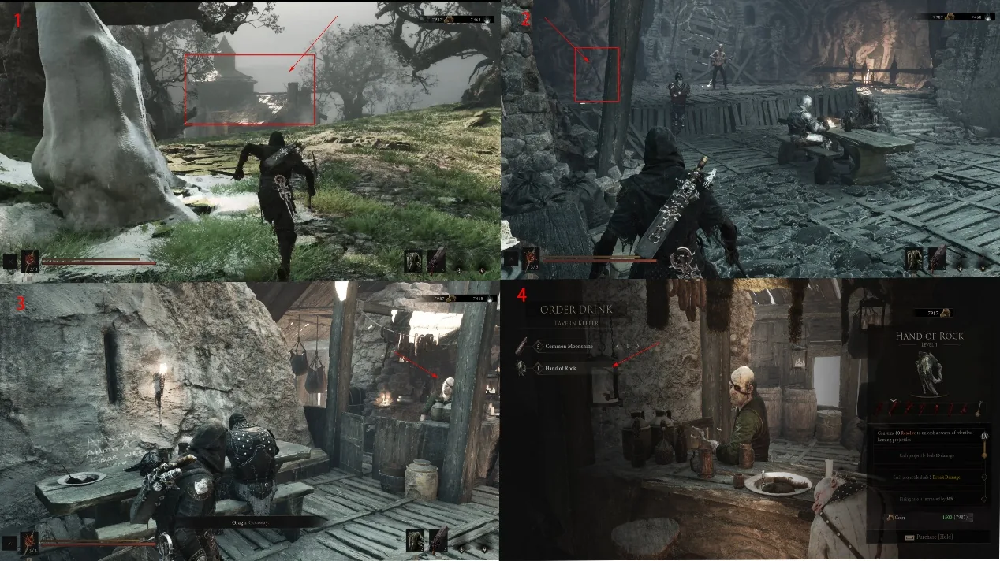

Sidearm · Fainweald
Troubadour's
Lute
The Troubadour's Lute is a sidearm pickup in the One-Legged Wolf Tavern. It is on the stage, not in the Temple of Vatra.
- Region
- Fainweald
- Location
- One-Legged Wolf Tavern
- Type
- Sidearm


Sidearm · Fainweald
The Troubadour's Lute is a sidearm pickup in the One-Legged Wolf Tavern. It is on the stage, not in the Temple of Vatra.
